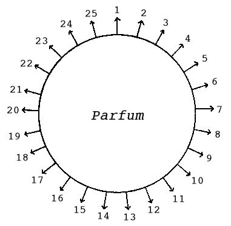

| 「香水の表情」に就いて ------漫談的無駄話------ | |
| 大手 拓次 | |
| (2012) | |
「香水の表情」に就いて
――漫談的無駄話――
大手拓次
ライオン歯磨本舗・広告部 悪の華
一
季節は移つてきて、香水の欲しい初夏
となつた。シヨウ・ヰンドウにも、美しい香水の瓶や、香水吹きが列
べられる。デパートの香水売場で、若い婦人だちの香水撰択の情景が繁くなる。
けれど、香水の複雑した表情に就いては、割合に無関心であるらしい。香水の表情とは、香水の良否の見分け方以外のことです。香気のもつれに出る細かい幻想の糸の織り成す感情の展開のことです。例へば、五月の表情を持つ香水もあり、六月の表情を持つものもあり、又は月光の表情を持つものもあり、霧の明方の表情を持つのもある。または、十七歳の少女の表情、廿歳の青年の表情、街の妖婦の表情、微風の表情、求愛の表情、青き夢の表情、水の流れの表情、森林の真昼の表情、処女の肌の表情、蛇の眼の表情、海のさざなみの表情、輝く指の表情、風にゆらぐ牡丹の表情、草間にかくれる苔花の表情、アメチストの表情、ゴールドン・サフアイヤの表情、ヂルコンの表情等数へきれないほどである。
例へば、坊間行はれてゐるロジアアの赤箱などは、さしづめ、散りかかつた紅薔薇
のやうな甘い媚の表情を持つてゐる。だから、この香水には、すこしばかりの濁りがある。清澄さは無い。けれど、この表情を理解して用ゐれば申分ない。
香水も、英国製、米国製などは、何といつても、フランス製品には及ばない。何故及ばないかといふに、この表情美の線が甚だ以て粗
いからだ。フランス製の香水の表情の線を処女のうぶ毛とすれば、その他の外国製品は、極細の絹糸ぐらゐのものだ。寧ろ国産品の香水に、なかなか良い品があるのは喜ばしいことだ。
フランス製品は、あるか無しかの、おぼろげなさを特長としてゐる。それほど迄に、リフアインされてゐるのだ。その表情の線を摑まうとしても、摑めないほどの柔かさを具へてゐるのだ。さはらうとすれば、逃げてゆくやうに思はれる頼りなさのところに評価しても評価しきれない貴重さが存する。
コテイーの香水のロリガン・エメロード巴里
なども、この表情を巧
につくりあげてある。
アリスの「夜
の花園
」「目を閉ぢて」「心のなかの愛」「最初の承諾」なども、全くこの表情を生かしてゐる。単なる花の香水、ジヤスマン、リラ、ローズ、ヒヤシンス、シプル、シクラメン等も、その表情がそれぞれ違つてくる。
同じホワイト・ローズでも、コテイーのと、ウビガンのとでは、その表情が非常に異つてゐる。「森林の香
」とか、オリエンタル・ブウケエなどは、比較的男性向な表情をもつてゐる。リラなどは、極めて低く一般的意味で若き婦人向の表情だ。
一体、表情といふのは、その香気が、あまい、かたい、やわらかい、にがい、くせがある。素直だ、強い、弱い、ふるい、新しい、あらい、こまかい、永く保つ、保たない、遠くへきく、遠くへきかない等といふ現実なものの見分け方の上に、更に、さういふ種々なものが綜合されて、ほのかに煙つてくる夢幻的感情の見分け方なのである。
だから、吾々は素人として「香水の表情」を見分けるには、闇のなかがよい、騒音の絶対に聞えない所がよい、朝がよい、初夏がよい、一人で居るのがよい、無言がよい、一時に一つの香水を試みるのがよい、食後相当時間を経てからがよい、直接よりも布
にでもつけるのがよい、眼をとぢてと眼をあいてと二様に試みるのがよい、距離もいろいろに試みるのがよい、男女別々に試みるのがよい、風のない日がよい、全裸体で感受して試みれば更によい。
かうして、その香水の純粋表情を見分けてから、第二段として之れを街頭に置いたものとして、悉く以上のものと反対の状態の下に於て、如何に、その表情が外的条件のもとに、ゆがめられてゐるかを試みるのである。
この二つの見分の方法が終つて、初めて、夜の香水、昼の香水、朝の香水、旅出の香水、ランデブウの香水、独居の香水、春の香水、夏の香水、冬の香水、男性向の香水、女性向の香水、芝居の時の香水、散歩の時の香水などと撰択することが出来る。
一般的標準からいへば、自己の体臭に似通つた香水の使用が推奨されてゐるが、これも結構だ。だが、要は、銘々が成る可く、違つた香水を用ゐることだ。
だから、三つも四つも五つもの香水をまぜて、新しい香水を作る道楽者もあるが、なかなかうまくゆかない。根本的は、表情のしつかりした鑑別だ。
話はそれるが、日本の昔の香道などは進んだものだ。ああいふものは、復活させたい。あの全身的感覚を動
かして、心身共に澄みきる所に、申分ない東洋的味ひがある。
日本の香の表情は、香水とは全然ちがつたものである。香は、内にこもるもので、香水は外にひらくものである。一面からいへば、香は精神への呼びかけで、香水は肉体への呼びかけである。
二
香水をつけるのに、自己の体臭をかくすため、人に話しかけるため、自己の幻想をよぶためなどがあるが、その用途によつて、それぞれ選び方が違つてくる。また、人待つ部屋に、「薫衣香」などたいて主人
の心を示すのと同様に、香水焚き（又は香水ランプ）などで香水の香気を部屋にみなぎらして人を歓び迎へる事もある。
それから、香水の香気と線と他の化粧品の香気との関係を考慮に置くことが必要だ。
その調和不調和によつて、香水の効果を増すことも減ずることもある。安全なのは、香水も化粧品も同じ香気で統一してゆくことだ。併
し、感覚が鋭敏なら、異
つた香気のものも用ゐて巧にそこに香気の色彩楽をかなでさせることだ。
その人の全体的感じが金属的リズムを発散させるなら、やはり金属線の表情を持つ香水を選ぶべきだ。また、風に傾く雛罌粟のリズムを出す人なら同様にかすかなゆらめきの表情を持つ香水を選ぶべきだ。
女の人が、ある香水が好きだと思つたら、その香水を自分の精神のリズムや、肉体のリズムと比較して見るのがよい。そこに調和があればよいが、若し、矛盾する点のみなら、その香水は使用してはいけない。
だが、ある人は云ふかも知れない。その反対の選択法がよいのだと。それは破れだ。相殺だ。蛇悪の醸成だ。
たとへば、夕暮のソフアに倚る麗人――モダンな中に多少クラシツクな美を愛する貴婦人、この人の主観的客観的表情に合ふものは、何だらう。Wistaria の香料はどうか。すこし線がゆがんでゐるやうだ。ジヤサントなどを交
へてはどうだらう。アルベエルサマンの詩に、アンリ・ド・レニエの散文調の詩をまぜたやうなものがいいだらう。
前と重複するやうだが、香水の表情の線を譬へてみると、処女のうぶ毛、睫毛、細い絹糸、眉毛、人絹糸、毛糸、女の頭髪、女の頸脚の毛、銀の針金等がある。
香水の表情の音色を譬へてみると、私語
、口笛、草笛、銀笛、朝鮮鐘
の夕暮余音
、バイオリン、クラリネツト、バス、テノル、蝶の羽ばたき、木の葉のかすれ、雛のふくみごゑ等がある。これらも、香水選択の一助となるだらう。
この頃、フランスから来ている煉香は、あまり感心出来ない。耳朶につけるかなどしても、どうしても粉つぽくて駄目だ。種類は十四五種ぐらゐあるらしいが、どの香も、粘
稠剤の関係でか、香気の共通性があつて、香気は異るには異るのだが、香水ほど際立たない。之れも、特殊な場合の、特別な用途にはいいだらう。
香水をつける場所は、誰も知つてゐるが、爪の生え際とか、乳くびとか、耳たぼの裏側、手の甲、えりあしなども知つておいていいだらう。
具体的な例をとつてみよう。ここにコテイの l'aimant があそ
の表情を見ると、
１、線は夕暁のする野路
をゆく少女の右腕の内側のうぶ毛のそよぎ。
２、音色
は、霞むやうな銀の鈴の遠音
の断続。
３、季節は、三月下旬から四月の初めの空
の、ためらひ勝ちの中
に動きのある風情。
４、姿は、心なく望みに迷ひ何となく求
めつつゆく二十一の女のうしろ姿。等々――以下略。
言はば、闇をくぐる水音の声なきが如く、ほそけれど絶ゆるなく、燃えあがる情緒を籠めてゐる。
（けれど、どの香水も使用する季節により、その表情に変化が伴ふことを心得ておかなければならぬ。）
このレエマンを使用する時あなたは、金の指環をしてはならぬ。何となれば、その指環の表情の硬さが、この香水の表情をそこなふから。ルビーのある指環はいけない。この紅い色の感じが、この香水の表情とそぐはないから。勿論、金側の腕時計などはいけない。大粒の真珠の一つ珠
をつけたピンを身体の何処かに、あらはにしないで使用するのがふさはしい。それもキーツのセントアグネスイーブのなかにあるやうに、その銀色の真珠を肌につけて、あたためてゐれば尚更情趣が加はるかも知れない。腕時計をするなら、プラチナ側
の余り光らない丸い７形か８形ぐらゐがよい。リボンの色は、淡声
色系統のものがよい。
このレエマンは、朝の香水でもなく、昼の香水でもなく、夜の香水でもなく、夕暮のなか風のなかに、又は、うまい紅茶のけぶるサロンのなかに使用する香水だ。
勿論、香水の表情の把握は、人によつて違ふだらう。しかし人人の把握するその香水の表情の諸相は、たとひ違ひがあつたとしても、その諸相を一貫するものは等しいのだ。
だから、香水の表情把握は香水に対する単なる嗅覚的見地から一歩深入りして、香水のかもしだす幻想美をひきだすからだ。
それ故、香水の表情をさぐるには、先づその香水の香気におぼれ沈んで、さて自己の感情の扇であふぐことだ。そして、どんな幻想が浮びあがるかをこころみるのだ。そして、浮び出た幻想をみつめるのだ。
さうして行くことによつて、初めは、その香水の表情の起す単純色の幻想から、複雑な幻想のシンフオニイーの愛好に入り更に青色美の持つ幻想の「ゆらめき」、「ほのめき」、「かすけさ」にひたるやうになる。けれど、まだパリジアンの香水愛好の高さには及ばないだらう。
香水は、音楽と等しく幻想の芸術だ。次から次へと移りながら、消えてゆく音
を捉へると同様に、散りゆく香気の翅を捉へて動きゆく、重なりゆく、高まりゆく、流れゆく幻想の画像をゑがくのだ。
香水を聞くのには、音楽を聞くのと同様に感情の扇が必要なのも、その理由はここにある。感情の波動のこはばつてゐる時は香水の表情は、よく聞きとれない。
自分の好きな香水、自分にふさはしい香水を選ぶには、大体の香気のほかに、その香水のなかにひそむ陰影を確めてからでなければならない。
何故といふに、その陰影は、ただ明るく、ほがらかに、媚にあふれ、姿態を誘ひ、そぞろ心を見せびらかす香気の外的表情の、散漫に陥りやすいのを緊張裡にひきとめ、内的表情にリズミカルな身ぶりをとるやうに不断の拍車をあてるからだ。
三
もの忘れした時のやうに、おぼえもあらぬ残り香の漂ひきて薄明
のなかをそぞろあるきするにも似た心地に誘はれることがある。
香水の持つ、この expression（表情）の魅惑は、更に鋭い感性の探針によつて、いよいよ豊かに、その盛りあがり、湧
きたつ幻想曲を吾々の前に現出する。
香水は、それを愛用するものに、見知らぬ国を与へるのだ。薄明と夢との交錯する国でありうつらうつらとした青き白日夢
の国である。また、限りない漂泊の旅路の想ひの国である。
そこに、香水撰択の至難がある。譬へていへば、その表情のハイフエツツの優婉に似通ひしもの、エルマンの甘さに似通ひしもの、ヂンバリストの寂びに似通ひしもの又は、イサドラダンカンの舞踊に、あの華やかなりし頃のニヂンスキーの「牧神の午後」の怪奇さに相通ずるものなど、吾々近代人の香水の選び方は様々の聯想を強ひられる。
◇
若し、日本音楽を愛し、歌舞伎劇を愛し、紫の色を愛
で、白緑の色を好み、紺蛇
の目を好き而も、近代ジヤズに魅力を感ずる女性あらば、如何なる香水がふさはしいか。マリー・ローランサンの画のやうな香水が好
いだらう。あのおぼろげな、眼のない、五月の空気のやうな感情を持てる女の、動物との遊戯の雰囲気。この雰囲気こそ、うつてつけのものだらう。
リラ・ブランの甘さをキイノートとし、これにバイオレツト・リーブスのやうな快い野性味を極少量伴奏させ、更にジヤスマンの古典風景で包んだとしたら如何であらう、この女性に似合はしくはないか。
◇
時代の刺戟が、吾々をとりまくことの激しさにつれて、吾々の神経系統は著しく敏感になつてきてゐる。
百合の香に堪へられない人、赤薔薇の香に堪へられない人、リラの香に堪へられない人等
が出てくる。そして、いよいよ香気の「ほのかさ」に向つて、心が誘はれるやうになる。この「ほのかさ」を愛すやうになつてやうやく香水使用の第一門に入つたのだ。
◇
香水を選ぶのには、まづ大体次の如き二十五種の「感じ」の鍵の助に依ることが便利である。――二十五と限つた訳ではなく数限りなくあるが、茲では、主なるものを挙げたにすぎない。
すなはち、ある一つの香水を対象として、見つめつつ行つてとぎすまされた感性の触手を動かし、斯くて、その香水から放射される二十五（無限）の「感じ」の一つ一つを味ひ尽すのである。その時、香水は、残るくまなく打ちとけて、親しみの手をさしのべるのだ。

１ 速度感 14
性別感
２ 重量感 15
硬度感
３ 形態感 16
角度感
４ 音響感 17
容貌感
５ 時刻感 18
性格感
６ 季節感 19
生物感
７ 言語感 20
光度感
８ 年齢感 21
触感
９ 韻律感 22
粘着感
10
方位感 23
湿度感
11
振幅感 24
運命感
12
色彩感 25
生長感
13
金属感
――図解参照を乞ふ
◇
さうして、この「感じ」が一つ一つ認められるとともに、また全体が共鳴
りして、絶えまない水の流れゆくやうな交響楽を奏するのである。
で、この綜合感と個々の感じとは、即
き、離れ、即き、離れつつ諧調をなし、破調をなして旋回するのだ。
その波紋を作つて進みきたり吾々に呼びかける、香水の表情の幻想の渦は、それぞれに、ある統一のもとに動いてゐる。その幻想の渦の形と色と速度とは、それを感じる者の感情の質量とによつて千変万化することは言ふまでもないが、その限りない変化の中に、なほ分つことの出来ない「自然の特質」が貫き漂つてゐる。
◇
けれども、その人の持つ感覚世界が一定の型のなかにとどまつてゐて、香水の発する放射線と快き合流を為
ない時は、その香水は、その人にとつて「開かざる蕾の花」であるか、又は、「半開の花」である。
かういふ人は、香水の話しかける言葉を読み得ない人である。香水の言葉と自分の感情とが手を結びあはせないのである。その言葉のこゑが聞えないのである。
香水の言葉を読みうるやうに成るためには、単純な花の香料から入つてゆき、最後に香料の極秘の殿堂に漫歩すべきであらう。
◇
ここに難問がある。heliotrope
（天然香料）とheliotropine
（人工香料）との如き二つのものの表情的差別である。この二者は、放射する外貌は同じやうであるけれど、後者の方は前者に比して、表情線がこはばつてゐて、前者のやうな豊富な言葉の波動と幻想量とを有してゐない。二者の比較は、しかし、なかなかむづかしい。
総じて人工香料の香気の表情は沈澱性を帯び、その渦紋の回転数も少なく、どこかしら金属性の影を偲ばせるのが欠点である。そして、微
かながらも、吾吾の夢幻への飛翔に対し、ある種の反撥性を蔵してゐる。
けれどもです、自然の和
みのなかに溶け入る黄金の針のやうに微動し戦慄する感受性を開花させないならば、人工香料の平面的な、固定的な、直線的な表情でも、十分に酔
ふことが出来るかもしれない。
要するに、香水を真に味ふには、見えざる感性の触手をはぐくみそだてることが捷径だ。
吾々の見えざる触手が感覚の花の盛りを呼びきたすならば、香水の移りゆく香気は、まどみ のなかに羽を搏 つ蝶のごとく、彼方此方に吾々の感情の色どりを植ゑてゆくだらう。
底本：「日本の名随筆48
香」作品社
１９８６（昭和61
）年10
月25
日第1
刷発行
底本の親本：「大手拓次全集 第五巻」白凰社
１９７１（昭和46
）年8
月
※冒頭の「ライオン歯磨本舗・広告部 悪の華」は、底本では署名の左に添えられています。
入力：土屋隆
校正：noriko saito
２００６年9
月19
日作成
青空文庫作成ファイル：
このファイルは、インターネットの図書館、青空文庫（http://www.aozora.gr.jp/）で作られました。入力、校正、制作にあたったのは、ボランティアの皆さんです。